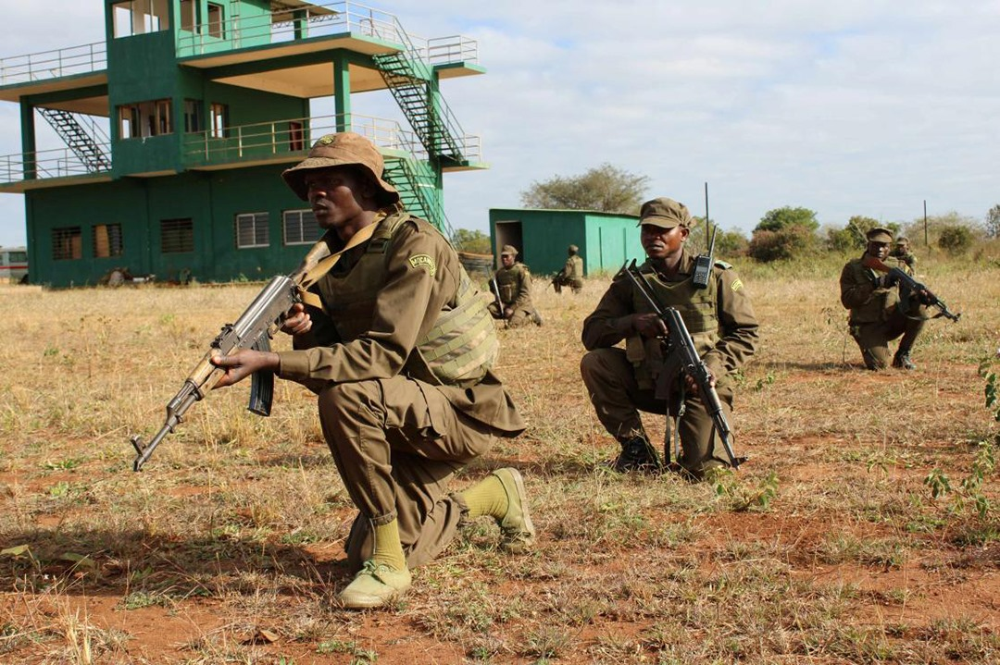

Quem Somos?
As Forças Armadas de Defesa de Moçambique (FADM) são a força militar nacional responsável pela defesa da soberania, da integridade territorial e da independência do país. Elas asseguram a segurança nacional, protegem as fronteiras e atuam em situações de emergência interna, catástrofes naturais e operações de manutenção da paz, tanto em Moçambique como em missões internacionais.
Missões
- Garantir a defesa militar de Moçambique
- Manter a ordem e estabilidade interna
- Participar em operações de manutenção da paz
- Cooperar no desenvolvimento nacional
- Garantir a segurança em zonas estratégicas
- Apoiar operações de busca, salvamento e ajuda humanitária
- Formar e preparar efectivos
Visão
Ser uma força armada moderna, profissional, disciplinada e credível, capaz de defender eficazmente a soberania e integridade territorial de Moçambique, contribuir para a paz e estabilidade nacional e regional, e prestar apoio ao desenvolvimento do país, com base em valores de patriotismo, ética e respeito pelos direitos humanos.
Ramos das FADM
- Exército (Exército Terrestre)
- Marinha de Guerra (Força Naval)
- Força Aéria (Força Aéria de Moçambique)